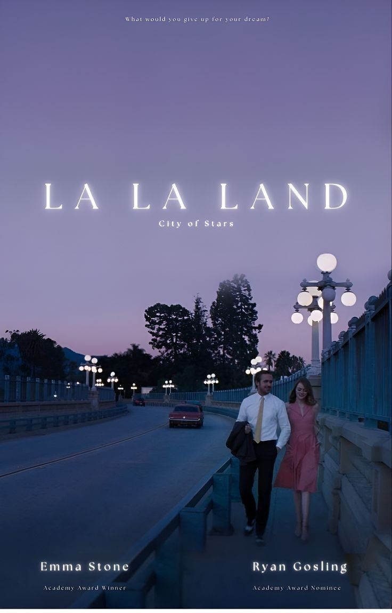
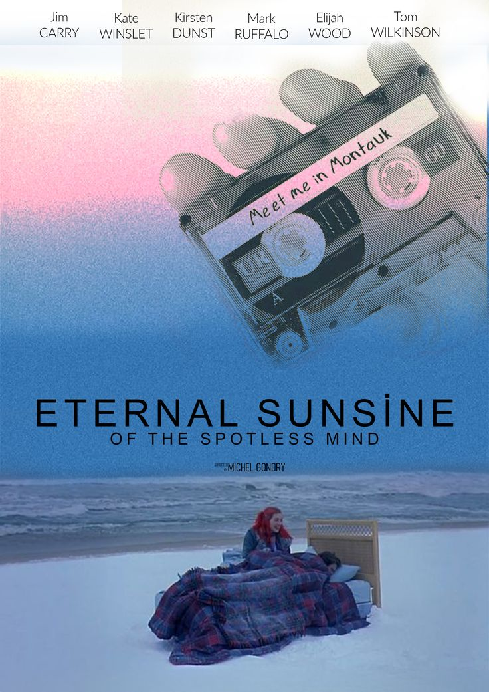
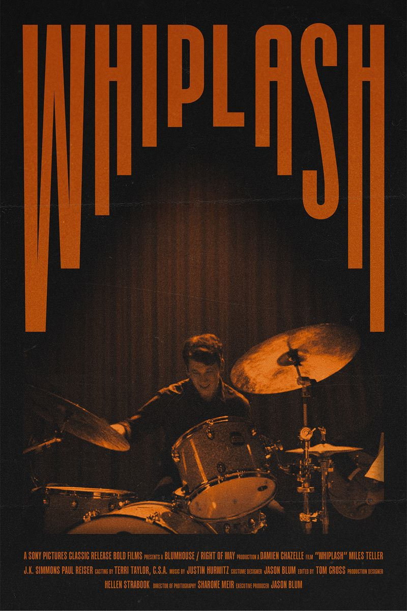
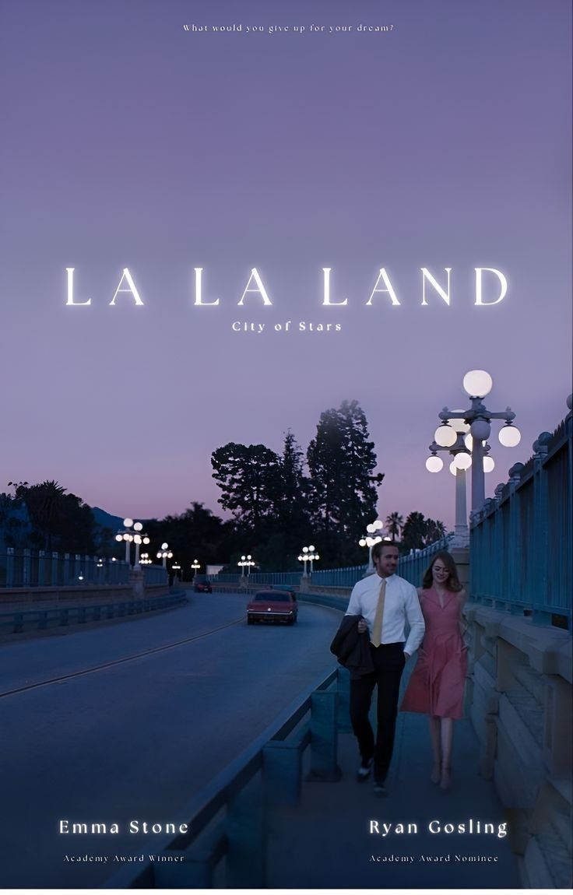
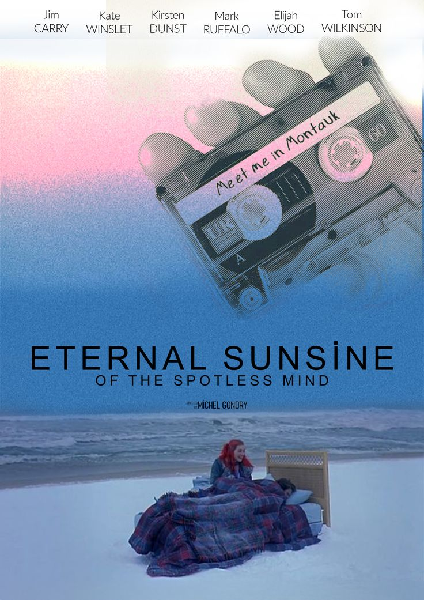
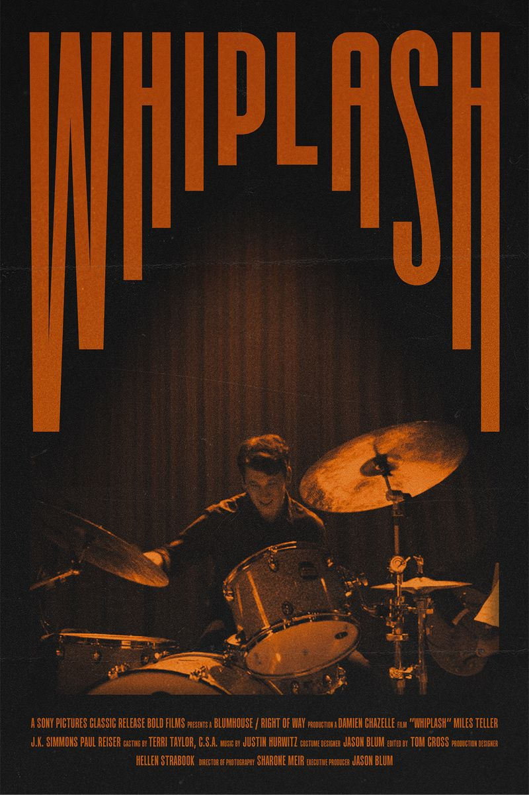
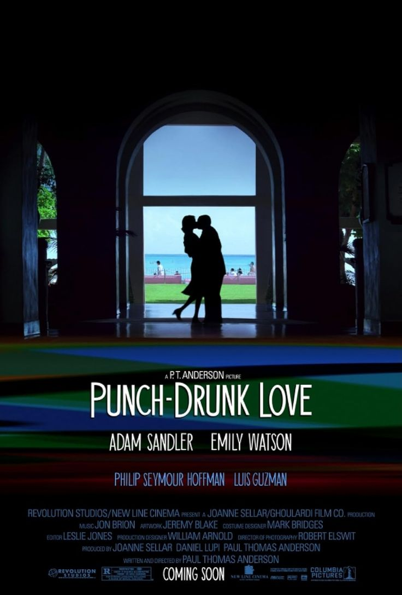

CURATED FRAMES
 






CINEMA, CURATED BY YOU
Welcome to Curated Frames — a personal space designed to collect, organize, and reflect on the films that shape how we see the world. This project treats movies not as content to scroll past, but as artifacts worth revisiting, ranking, and remembering.
The Scope
Curated Lists
Build intentional collections instead of endless watchlists.
Cinematic Perspective
Treat each film as part of a broader visual language.
Personal Archive
Create a lasting record of what moved you and why.

| Feature | Description |
|---|---|
| Lists | Organized film collections |
| Reviews | Short reflections per film |
| Archive | Personal cinema history |